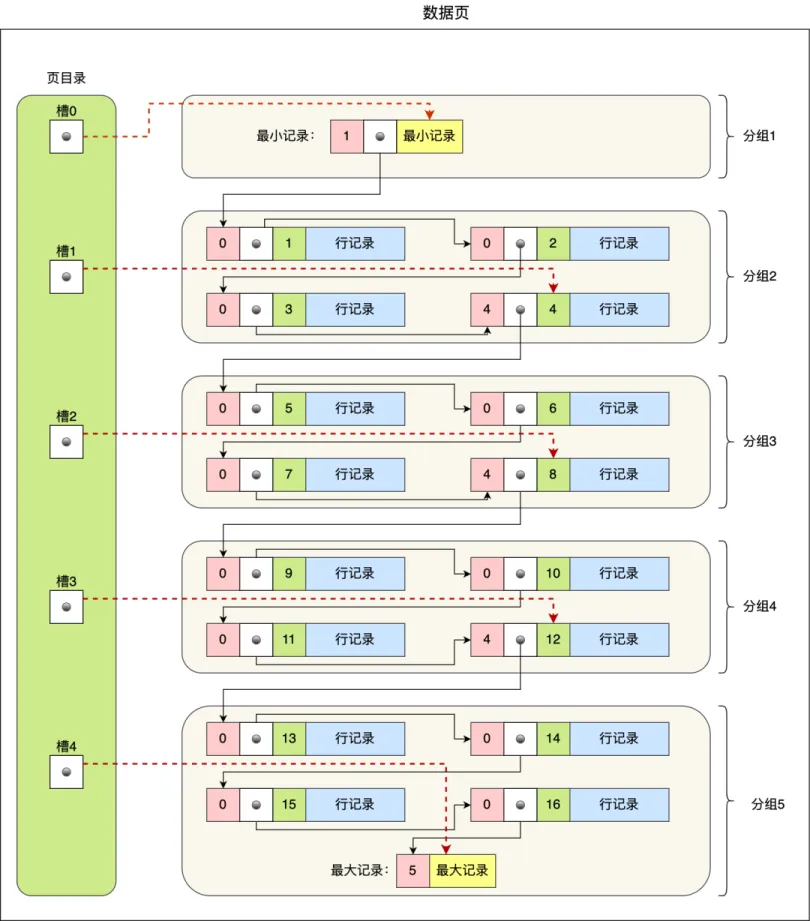

# MySQL 高级
# 执行一条 SELECT 的过程

# 连接器
- 对客户端进行连接，用户名 密码等权限校验
- 连接有短连接和长连接 短连接会频繁断开和连接过程 对效率不高 推荐使用长连接
- 如果在连接过程中对密码修改 长连接不会拒绝请求 只有在下一次重新连接才会校验
- 长连接默认 8 小时空闲会自动断开连接 不会告诉客户端 只有客户端发起请求才会接到报错
- 为了防止长连接占用大量系统资源而导致的异常重启
- 定期断开连接
- 客户端主动重置连接
# 查询缓存
- 查询缓存是 MySQL 服务器中的一部分，用于缓存查询结果，以便在后续的相同查询中直接返回缓存的结果，而不需要再次执行查询语句。查询缓存可以提高查询性能，因为它减少了数据库的负载和 I/O 操作。
- 在 MySQL 8.0 中，查询缓存被完全移除了，因为它的性能提升有限，并且存在一些问题，例如缓存失效和内存管理问题。因此，在 MySQL 8.0 中，查询缓存不再可用。
# 分析器
- 词法分析：将输入的 SQL 语句分解成一个个的单词和符号，例如 SELECT、FROM、WHERE 等。
- 语法分析：根据 SQL 语句的语法规则，检查输入的 SQL 语句是否符合语法规范，例如检查关键字是否正确，表名和列名是否存在等。
- 语义分析：根据 SQL 语句的语义规则，检查输入的 SQL 语句是否合法，例如检查表名和列名是否正确，以及 WHERE 子句中的条件是否合法等。
# 预处理器
- 预处理器会根据 SQL 语句的语义规则，检查输入的 SQL 语句是否合法，例如检查表名和列名是否正确，以及 WHERE 子句中的条件是否合法等。
- 判断表和字段是否存在
- 将 * 扩展为所有列
# 优化器
- 优化器会根据查询语句的执行计划，选择最优的执行路径，例如选择合适的索引、连接顺序等。
- 使用 explain 命令查看执行计划
# 一行记录是怎么存储的？
# 表空间结构
MySQL 文件存储在 var/lib/mysql 文件目录 每创建一个数据库 就会产生一个以 database 为名的文件
- 每个数据库表文件有 db.opt xxx.frm xxx.ibd
- db.opt 存放字符集和字符校验规则
- frm 表结构
- ibd 真实数据
- 表 -> 段 -> 区 -> 页 -> 行
- 段
- 索引段 存放 B+Tree 非叶子节点
- 数据段 存放 B+Tree 叶子节点
- 回滚段 存放回滚数据
- 区
- MySQL 和数据交互采用页为单位 16KB 使用双向链表连接
- 当数据量越来越大时 数据页内存不连续 查询会降低性能 索引树就采用区为基本单位分配空间 64 个页分一个区
- 页
- 和磁盘数据交互的基本单位
- 行
- redundant 古老的行格式 没有再使用
- Compact
- Dynamic
- Compressed
# Compact 行格式

# 变长字段长度列表
存储字段中变长字段占用的字节数 变长 NULL 列的大小不会存储 按照字节大小 16 进制逆序存放
- 为什么逆序存放？
因为记录头信息存放着下一个记录的指针 该指针指向下一条记录的记录头信息和真实数据之间的位置
向左读就是记录额外信息 向右读就是真实数据
这样使变长字段和长度对应起来 存放在同一个 CPU Cache Line 中，使 CPU 命中率更高 查询更快
- 不是必须的列表 当表字段没有变长字段时就会舍去该列表 节省空间
- 分配字节小于 255 使用 1 字节存储长度 大于 255 使用 2 字节
# NULL 列表
按照二进制比特位存放 NULL 字段 为 NULL 对应 1 不为 NULL 对应 0 同样也是逆序存放
- 不是必须的列表 当表字段没有 NULL 时就会舍去该列表 节省空间
- NULL 列表是以一个字节为单位存储 如果有 9 个字段为 NULL 会分配 2 个字节 NULL 列表至少占用 1 个字节的空间
# 记录头信息
- delete_mask：设置删除的记录标记为 1 不会真正删除数据
- next_record：下一条记录的位置
- record_type：0 普通记录；1 B+Tree 非叶子节点记录； 2 最小记录； 3 最大记录
# 记录真实数据
# 隐藏列
- row_id：隐藏主键 记录没有指定主键 又没有唯一索引 就会产生该字段
- trx_id：事务 id
- roll_pointer：回滚指针 版本链指针
# 一行记录 VARCHAR (n) 中 n 最大取值多少？
- varchar 字段占用字节大小包含数据大小、数据长度字节、NULL 值大小
# 行溢出数据怎么解决？
如果一行记录溢出数据 比如 TEXT BLOB 会将溢出的数据存放在溢出页中
- Compact 记录一部分数据 剩余空间采用 20 字节记录溢出数据的地址
- Dynamic 和 Compressed 不存放真实数据 只存放 20 字节指向溢出数据的指针
# 事务的隔离怎么实现？
# 并行事务产生的问题：
- 脏读一个事务在执行过程中 读取到了另一个事务还未提交的数据 如果另一个事务回滚 那这个数据就是脏数据 脏读
- 不可重复读 一个事务两次先后读取到的数据不一致
- 幻读 一个事务两次先后读取到的记录不一致
# 事务的隔离级别
- 读未提交 一个事务可以读取到另一个事务未提交的数据
- 读提交 只有事务提交后其他事务才能看见变更的数据 不可能发生脏读
- 可重复读 数据从事务开启一直到结束都保持一致 InnoDB 默认隔离级别 不可能发生脏读和不可重复读 可能发生幻读
- 串行化 对事务的进行加读写🔒 事务如果发生读写冲突 需要等上一个执行完成才能继续进行 三种问题都不可能发生
# 解决可重复读的方案
- 快照读 使用 MVCC
- 当前读 使用 Next_key Lock
# MVCC 是如何工作的？
# Read-View
- creator_trx_id 创建该 Read-View 的事务的事务 id
- m_ids 创建该 Read-View 时 活跃的事务（已经创建事务 但是还未提交）
- min_trx_id m_ids 中最小的事务 id
- max_trx_id 创建 Read-View 后 数据库应该给下一个事务的 id
# 聚簇索引的两个隐藏列
- trx_id 对该条记录操作的事务的事务 id
- roll_pointer 指向 undo_log 版本链的旧版本的指针
# MVCC 工作原理
- 在启动事务时创建当下事务的 Read-View
- 根据 Read-View 中的字段和聚簇索引的两个隐藏列：
- trx_id < min_trx_id 说明在该事务创建前就已经提交 记录可见
- trx_id >= max_trx_id 说明在该事务之后才创建的事务 记录不可见
- min_trx_id <= trx_id < m_ids
1. 在 m_ids 事务还未提交 记录不可见 会根据 roll_pointer 沿着版本链寻找旧版本 找到第一个小于 min_trx_id 的 undo log
2. 不在 m_ids 事务已经提交 记录可见
# 可重复读的 MVCC
- 在事务启动时创建 Read-View 一直到事务提交都用这个 Read-View
读提交的 MVCC - 在每条执行语句启动时创建 Read-View
# MySQL 锁
# 锁分类
# 全局锁
- 当数据库加上全局锁 整个数据库处于只读状态 其他任何插入、更新、删除操作都会被阻塞 主要用于数据库的备份 如果备份不加全局锁 那么在备份的时候如果有数据更新会导致不可理解的错误 比如一个项目有多个数据库多张表 可能一个请求就会修改多个表 备份的先后顺序导致各个表的数据不匹配
- 如果要避免这种阻塞 可以对备份开启可重复度隔离级别事务 使数据库备份的时候 其他操作正常进行 但是不会影响备份的数据
# 表级锁
# 表锁
- 如果对某一个表加上共享表锁 本线程和其他线程对该表的写操作都会被阻塞 颗粒度太大 不建议使用 可以使用 InnoDB 提供的行级锁
# 元数据锁 (MDL)
- 元数据锁是为了在操作表的时候防止对表结构变更
- CRUD 操作自动加 MDL 读锁 修改表结构自动加 MDL 写锁 在 CRUD 时如果对表结构进行修改将被阻塞
- 读读不互斥 读写互斥 写锁获取优先级比读锁高 当一个线程获取了 MDL 写锁 没有释放 那么接下来的线程的读写锁都将获取不到 阻塞
# 意向锁
- 目的是为了快速判断表中是否有记录加了共享锁或者独占锁 防止全表扫描判断是否有记录占有锁
- 对表中某些记录加上共享锁或者独占锁时 会分别加上意向共享锁和意向独占锁
- 意向共享锁和意向独占锁不互斥 也不会和行级共享锁和独占锁互斥 只会和共享表锁和独占表锁互斥
# AUTO-INC 锁
- 通过字段加上 AUTO-INCREMENT 属性加锁
- InnoDB 使用系统变量 innodb_autoinc_lock_mode 对 AUTO-INCREMENT 属性的字段进行锁控制
- 0 ：使用 AUTO-INC 锁 插入语句时加锁 对字段自增 语句结束释放锁
- 2 ：使用轻量级锁 申请主键后就释放锁
- 1 ：普通 insert 语句 自增锁在申请之后就马上释放 insert … select 这样的批量插入数据的语句，自增锁还是要等语句结束后才被释放
# 行级锁
# Record Lock
- 记录锁 锁住某一条记录
- S X 锁之分 SS 不互斥 SX 互斥 XX XS 互斥
- 当记录加上 X 锁 其他事务无法对该记录修改
# Gap Lock
- 间隙锁 锁住某一个范围 开区间
- 间隙锁虽然也有 S X 之分 但是不互斥 间隙锁可以防止幻读的发生 所以不同事务的间隙锁可以有交集
# Next-Key Lock
- 间隙锁和记录锁的结合 左开右闭
- 锁定一个范围 也锁住本身 即能保护该记录，又能阻止其他事务将新纪录插入到被保护记录前面的间隙中
- 因为有记录锁的存在 因此如果一个事务获取与另一个事务相同范围的 Next-Key Lock 时会被阻塞
# 插入意向锁
- 一个事务要对某条记录操作 加锁时 将判断该记录是否被加了间隙锁 如果已经加锁将会被阻塞 并且生成插入意向锁
- 表明有事务将要在此插入记录 处于等待状态
# MySQL 是如何加行级锁的？
MySQL 加锁的对象是索引 加锁的基本单位是 Next-Key Lock
# 唯一索引等值查询
- 记录存在 退化成记录锁
- 记录不存在 退化成间隙锁
id | |
1 | |
5 |
查询 id = 2 不存在 加 (1,5) 间隙锁 即可 只要保证每次查询的结果相同即可 不用加 Next-Key Lock
查询 id = 5 存在 加记录锁 保证该记录不被修改也不被删除即可
# 唯一索引范围查询
- 大于 大于等于
- 大于 加 Next-Key Lock 最大值有一个 supermum record
- 大于等于 如果记录值存在 加记录锁 其他的加 Next-Key Lock
- 小于 小于等于
- 记录值不存在
- 小于 小于等于 扫描到终止范围的记录时会退化成间隙锁 其他的 Next-Key Lock id = 1 5 10 查询 id <6 10 加间隙锁 (5,10)
- 记录值存在
- 小于等于 对记录加记录锁 其他加 Next-Key Lock
- 小于 对记录加间隙锁 其他 Next-Key Lock
- 记录值不存在
# 非唯一索引等值查询
由于非唯一索引可能产生多条结果 所以查询时采用扫描的形式
- 记录不存在 对第一个不符合条件的二级索引加间隙锁 同时对相应的主键索引加间隙锁
- 比如 id=10 age=22 id=20 age=30 插入 age = 22 或 age = 30 时如果 id 不在间隙锁范围 就可以插入成功 否则失败
- 记录存在 对第一个不符合条件的二级索引加间隙锁 同时对主键索引加间隙锁 记录存在的主键加记录锁 二级索引加 Next-Key Lock
# 非唯一索引范围查询
- 二级索引都加 Next-Key Lock 主键索引都加记录锁
# insert 是如何加锁的？
如果插入时没有遇到阻塞情况 正常插入 会在记录中维护隐藏列 trx_id 在需要锁的时机会生成相应的锁 这样使得插入效率提高也保证了安全性
# 插入范围存在间隙锁的情况
- 此时的事务想要获取插入意向锁 但是会被阻塞 插入意向锁处于等待状态 无法插入
# 唯一键情况
# 主键索引
- 插入时主键索引发生冲突时 原记录会被插入的事务加上 S 记录锁
# 唯一 二级索引
- 对于原表中就有的记录 插入时发生冲突 原记录会被加上 S Next-Key Lock
- 当有事务想要查询该条记录时 想要加上 X 型的记录锁 S 和 X 是冲突的因此会发生阻塞
- 对于原表没有的记录 a 事务执行插入 成功 此时没有锁 b 事务插入同样的数据 由于 a 事务还没提交 所以 a 事务插入的记录会由隐式锁变为显示 X 记录锁 b 事务想要 S Next-Key Lock S 和 X 冲突发生阻塞
# 日志
# undo log
用于记录事务操作数据前的旧版本数据 在记录中还有 trx_id 和 roll_pointer roll_pointer 指向旧版本记录 形成版本链 方便事务回滚
同时也是 MVCC 的核心部分 保证原子性
- 更新前 记录更新列的旧值 回滚时更新为旧值
- 删除前 记录删除前的原记录 回滚时 插入原记录
- 插入时 记录主键值 回滚时 删除主键所在记录
# Buffer Pool
对数据操作时 如果 Buffer Pool 有该条数据 就对数据操作 速度快效率高 其中包含索引页 数据页 undo 页
- InnoDB 和磁盘数据交互以页为单位 每个页大小为 16KB 所以 Buffer Pool 中的页也根据 16KB 大小划分
- 如果对数据更新或删除 首先对存在 Buffer Pool 中的数据操作 将对应页设置为脏页 不会立即刷盘 交给后台选择合适时机刷盘持久化
- 查询一条记录时，InnoDB 会把整个页的数据加载到 Buffer Pool 中，将页加载到 Buffer Pool 后，再通过页里的「页目录」去定位到某条具体的记录
# Buffer Pool 如何管理空闲页
- 使用控制块把空闲的缓存页连接起来 作为 Free 链表 头节点的控制块包含头节点和尾节点的地址以及缓存页数量等信息
- 当有磁盘页对 Buffer Pool 做交互时 就在 Free 链表选取空闲页 然后移除 Free 链表的空闲页控制块
Buffer Pool 如何管理脏页 - 和 Free 链表类似 只是 Flush 链表中的控制块地址是脏页
- 后台进程从 Flush 链表选取脏页刷盘 然后移除在 Flush 链表的控制块
# 如何提高缓存命中率
对于经常访问的数据 可以放在 Buffer Pool 的时间长一些 不经常访问的就可以移除
使用 LRU 算法对其管理
- Buffer Pool 访问到数据 将该缓存页移动到链表头部
- 从磁盘加载数据到 Buffer Pool 加载到链表头部 并移除尾结点
- Free Page：存放在 Free 链表
- Clean Page：存放在 LRU 链表
- Dirty Page：存放在 LRU 链表和 Flush 链表
# Buffer Pool 解决预读失效
访问某个页的数据时 可能相邻的页也会被访问到 所以 MySQL 从磁盘加载数据到 Buffer Pool 时会把相邻的页也加载到缓冲区
如果某个预读页长时间不会被访问到 有可能会导致真正的热数据被移除链表 预读失效了
- MySQL 实现 LRU 算法 将前部分链表设计为 young 区 后部分设计为 old 区
- 预读的页先加入到 old 区头部 只有被访问时才会被加入到 young 区头部
- 这样不会影响热数据 也能更好管理不会被访问的预读页
# Buffer Pool 解决 Buffer Pool 污染
之前的设计方案 如果对数据进行全表扫描或者扫描局部数据 将数据页加载到 young 区 导致真正的热数据被移除
这就是 Buffer Pool 污染
- MySQL 对数据页移动到 young 区提高门槛 设置了一个时间间隔 访问 Buffer Pool 数据时会记录该时间点
- 如果后续访问与第一次访问的时间在设定的时间间隔内 那不会加入到 young 区 否则加入
- 只有满足被访问和停留 old 时间超过设定的时间间隔才会被加入到 young 区
- 为了防止 young 区域节点频繁移动到头部。young 区域前面 1/4 被访问不会移动到链表头部，只有后面的 3/4 被访问了才会
# redo log
用于记录某个数据页做了什么操作 在事务操作完数据后记录 这个时候数据就算更新完成 作用是防止数据丢失 保证持久性
- 对数据操作时 先在 Buffer Pool 存储更新的数据 然后再写入 redo log 的具体操作
- 后台会在适当时间进行 Buffer Pool 刷盘 这就是 WAL 技术
- 当然事务提交后就可以 redo log 落盘 不必等到 Buffer Pool 落盘
- 如果应用宕机造成数据丢失 重启后可以根据 redo log 恢复数据 这就是 crash-safe 技术
- redo log 刷盘是顺序写 比之前的随机写效率高 提升落盘性能
# redo log buffer
redo log 不是产生后立马刷盘 而是先保存到内存的 redo log buffer 待合适时机再落盘
# 落盘时机
- MySQL 正常关机
- 每隔一秒刷盘
- 存入 redo log buffer 的数据超过 buffer 内存一半时刷盘
- 事务提交后由 innodb_flush_log_at_trx_commit 控制刷盘
- 0 保存到 buffer 不刷盘 每隔一秒 写入 Page Cache 再调用 fsync 刷盘
- 1 直接刷盘
- 2 写入 Page Cache 每隔一秒 刷盘
- 默认情况下， InnoDB 存储引擎有 1 个重做日志文件组 (redo log Group)，「重做日志文件组」由有 2 个 redo log 文件组成
- 如果两个文件满了 write pos 和 check point 重合 MySQL 事务会被阻塞 等到 Buffer Pool 数据落盘后 check point 往后走 又继续更新 redo log MySQL 正常运行
# binlog
# 为什么需要 binlog?
- 和 MySQL 时间线有关系 MyISAM 引擎只提供了 binlog 记录日志 没有 crash-safe 能力 后来的 InnoDB 引擎 以插件形式引入 MySQL，自己实现了 redo log 和 undo log 实现 crash-safe 和 WAL 技术
# binlog 和 redo log 的区别
- binlog 在 server 层 每个存储引擎都可以使用 redo log 是 InnoDB 专属的
- 写入日志方式不同 binlog 是追加写 写满文件另起起一个继续写 redo log 是循环写
- 文件格式不同
- binlog
- statement 记录 SQL 语句 但是使用动态函数会导致主从不一致
- row 记录数据 如果更新多条数据 statement 可能一条语句就完成 大小不一样
- mixed 混合 合适的时机选择合适的格式
- redo log
- 物理日志 记录在 xx 页做了什么
- binlog
- binlog 用于主从复制 备份恢复 redo log 用于掉电恢复
# 主从复制怎么实现的？
- 主库提交事务时 会把日志写入 binlog 后再提交事务
- 然后创建一个 log dump 线程用于给从库主从复制
- 从库连接 log dump 线程 把 binlog 写入中继日志 relay log
- 回放 binlog 执行 relay log 的 SQL 实现主从数据一致
# 三种复制模式
- 同步复制 主库等所有从库响应复制成功后再返回客户端响应 性能损耗大
- 异步复制 主库提交事务后立即响应客户端 不等从库的响应 主库宕机可能会导致复制失败
- 半同步复制 两种混合 折中方案 只要有一个从库复制完就算成功 响应客户端
# 刷盘时机
- binlog 先一次性写入内存缓冲区 binlog cache 一个事务完整写入 binlog 保证原子性
- 由 sync_binlog 参数决定刷盘时机：
- 0 将 cache 写入操作系统的 page cache 由操作系统决定刷盘时机
- 1 写入 page cache 后立即调用 fsync 刷盘
- N (N> 1) 待累计 N 个事务后再刷盘
# 两阶段提交
# 为什么需要两阶段提交？
- 如果 redo log 刷盘了 但是 binlog 还没刷盘就宕机了 导致从库的数据不一致
- 如果 binlog 刷盘了 但是 redo log 还没刷盘就宕机了 导致主库的数据不一致
# 两阶段提交的执行过程
执行 commit 语句后 MySQL 内部开启 XA 事务执行两阶段提交
- prepare 阶段：把 XID 写入 redo log 然后对应的事务设置 prepare 状态 redo log 刷盘 刷盘参数设置 1
- commit 阶段：把 XID 写入 binlog 然后对应的事务 redo log 设置 commit 状态并刷盘 binlog 刷盘 刷盘参数设置 1
根据日志文件 XID 判断是否需要回滚
- 时刻 A 宕机：redo log 有 XID binlog 没有 XID 会判定为两阶段提交失败 事务回滚
- 时刻 B 宕机：redo log 和 binlog 都有 XID 判定已经刷盘持久化 事务提交成功
- 由于两个参数设置 1 会导致大量磁盘 IO 多个事务存在锁竞争所以 MySQL 设置了 binlog 组提交
- flush 阶段：多个 binlog 文件按顺序写入 page cache 不刷盘 该阶段还做 redo log 的组刷盘
- sync 阶段：多个 binlog 文件一次刷盘
- commit 阶段：各个事务 redo log 做 commit 操作
- redo log 也有组提交（5.7 之后）放在 flush 阶段延迟写 redo log 一次性写入磁盘 提高效率
# 索引
# 按照数据结构分类
B+Tree 索引 Hash 索引 Full-Text 索引
# B+Tree 索引
- InnoDB 存储引擎的默认索引类型 分为主键索引和二级索引
主键（聚簇）索引选择：
- 默认使用主键作为主键索引
- 没有主键索引 默认选择第一个非 NULL 的唯一键做主键索引
- 两个都没有 InnoDB 引擎自动生成隐式自增 id 作为主键索引
其他索引为二级索引 非聚簇索引 这些索引默认都是用 B+Tree 作为底层数据结构
- 主键索引的 B+Tree 中，非叶子节点存放主键 叶子节点存放主键和数据
- 二级索引的 B+Tree 中，非叶子节点存放二级索引 叶子节点存放主键值
- 回表：当使用二级索引查询时 先在二级索引树找到主键值，再在主键索引树寻找数据
- 索引覆盖：如果查询的是主键值 二级索引就可以查询到结果 不用回表
- 每一次获取节点的数据进行比较，就相当于一次磁盘 IO
# B+Tree 和其他数据结构的对比
- 数组二分查找
- 查询效率是 O (logn)
- 插入和删除效率是 O (n) 数据量越来越大不方便 消耗性能太大
- 二分搜索树
- 相较于数组 解决了插入效率低的问题 不必连续排列 插入时不用全部向后移动
- 但是可能会退化成链表 树的高度很高 这样时间复杂度又回到 O (n) 了 磁盘 IO 的次数也会很高
- 平衡二分搜索树
- 对左右子树的高度差进行限制 避免退化成链表
- 因为是二叉树 每个节点最多只能有 2 个子节点 数据量大的时候树的高度还是会很高
- B 树
- 每个节点可以有多个子节点 比二叉搜索树更矮胖 高度降低 磁盘 IO 次数大大减少
- 每个节点存储 索引 + 记录 因此搜索的时间复杂度有波动 可能一次就查询到 也可能需要到叶子节点才能查询到结果
- 不利于范围查询（中序遍历）会产生大量无用的磁盘 IO，也不利于插入和删除 因为没有冗余节点 可能发生复杂的树结构变化
- B + 树
- 非叶子节点只存储索引 因此每一个非叶子节点可以存储更多的索引 比 B 树更矮胖
- 每个节点的子节点都包含父节点的索引 且是子节点的最大或者最小值 因此会有大量冗余节点 这也使得插入和删除不会发生复杂的树变化 效率比 B 树高很多
- 叶子节点采用双向链表连接 范围查询时向右或者向左遍历即可 避免了树的遍历
- 非叶子节点有多少个子节点 就有多少个索引
- InnoDB 存储引擎中每个节点存放的数据单位是页
# MySQL 中的 B+Tree
- B+Tree 使用页（16KB）为节点的基本单位 页中的文件头有前后两个指针 构成双向链表
- User Records 中的数据形式：

- 用户记录中的数据用主键的顺序组成单向链表 插入和删除的效率非常快 缺点是查询效率慢 因此还设置了一个页目录 记录索引的作用
- 页目录中将记录分组 每个分组按照主键顺序构成单链表 有最小记录和最大记录 每个分组中的最后一条记录就是最大记录 最大记录的地址偏移量就是该组的页目录 而且最大记录还存储了每组的记录条数
- 页目录的槽 (slot) 按照地址偏移量的先后顺序组成，因此在查询时使用二分法快速查询页所在的目录 进入具体分组单链表遍历查询结果
- 为了避免分组中遍历查询复杂度回到 O (n) 所以 InnoDB 对每个分组进行规定：
- 第一组只能有一条记录
- 最后一组 1~8 条记录
- 其他组 4~8 条记录
# 按照字段个数分类
# 联合索引
- 由数据库表的多个字段构成一个索引
- 应该将区分度高的字段靠前
- 存在最左匹配原则
- 联合索引查询时可能有的字段不会使用到
# 最左匹配原则
联合索引根据靠左的字段进行排序 根据字符串的最左前缀进行排序
- 只有第一个字段是全局有序的 剩余字段局部有序 全局无序 这是根据前一个字段排序后决定的
- 如果前一个字段有多个相同值 后一个字段就会局部有序
- 范围查询时遇到＞＜会停止匹配 后面的字段不会用到联合索引 ，≥≤ between like xxx% 时会继续匹配 相同的情况下进行后面字段排序 用到了联合索引
- 对于需要 order by,group by 的字段排序 应该加入到联合索引 进行排序
# 索引下推
- 使用联合索引查询时，如果第一个字段匹配 第二个字段没有使用到索引 就会根据二级索引产生回表，然后返回数据给 Server 层进行后面字段的比较
- 而如果使用索引下推 会将后面的字段也直接在存储引擎层进行比较过滤 返回过滤后的数据 减少回表次数
# 索引失效
# 使用左 / 左右模糊匹配 % xx % xx%
MySQL 存储引擎 InnoDB 使用 B+Tree 数据结构 按照索引值进行排序 按照索引的前缀进行比较查找 左或左右模糊匹配只有后缀 前缀无法确定 不满足索引的有序性进行查找
# 对索引进行函数运算
B+Tree 存储的是索引值 不是函数表达式运算后的值 所以会索引失效
# 对索引进行表达式运算
和函数类似 比如 id=10-1 可以使用索引比较 但是 id-1=10 就不能了 因为 id-1 表达式不是索引
# 联合索引没有使用最左匹配原则
联合索引创建后 是根据前一个字段排序之后才会对第二个字段排序，所以对联合索引查询的时候如果去掉了之前的字段 后面的字段就无法排序比较
# 对索引隐式转换
MySQL 默认会把字符串转换为整数类型 如果索引是字符串类型 对索引查询时使用整数类型 会对索引进行隐式转换 其实也是 CAST 函数 导致索引失效
# WHERE 条件使用 OR
如果索引使用了 OR，另一个普通字段也在 OR 语句里 由于只要满足一个条件就能查询 所以普通字段的加入就会导致索引失效
# % xxx 一定会索引失效吗？
- 如果表中有非索引字段 而查询使用二级索引左模糊匹配 因为不满足索引的有序性查找 会走全扫描二级索引树 再回表根据主键索引查找数据 优化器认为这样太累了 会走全扫描表 索引失效
- 如果表中只有主键和二级索引 查询使用二级索引左模糊匹配 会全扫描二级索引树 索引生效 （为什么不回表？ 因为二级索引树就包含了很多所有字段 并且主键索引还会有额外的事务 id 等 而且已经找到了所有字段就会走覆盖索引）
# COUNT (*) 和 COUNT (1) 性能有区别吗
COUNT () 函数是按照条件查询后 统计函数字段不为 NULL 的记录条数
Server 层会维护一个 count 变量 存储引擎每返回一条数据就加一 最后返回 count 的值
# COUNT (主键)
- 默认使用二级索引（存储内容比聚簇索引更少 性能更快） 没有就使用聚簇索引
- 返回主键不为 NULL 的记录
# COUNT (*) 和 COUNT (1)
- 官方文档说明两个性能一样
- count (*) 会转化为 count (0) 1 和 0 永远都不为 NULL 所以会查询表中所有记录条数 但不计算字段
# COUNT (普通字段)
- 性能是最差的